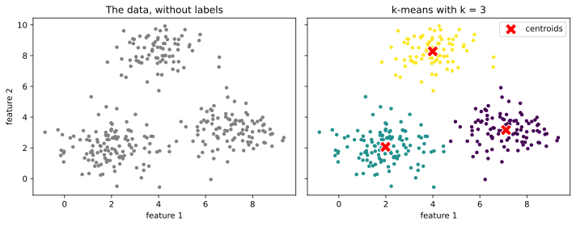
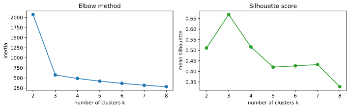
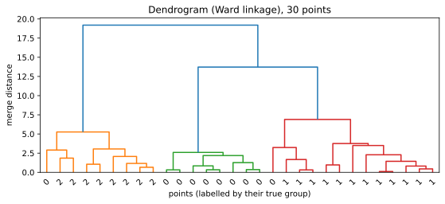
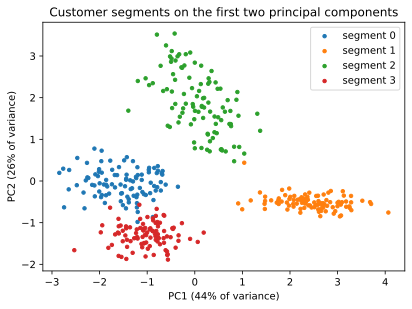

Chapter 11: Clustering and Dimensionality Reduction¶
Finding groups and structure in data without labels
Learning outcomes
After this chapter you should be able to:
- explain what unsupervised learning is and what it can and cannot tell you;
- describe the k-means algorithm, run it with scikit-learn, and explain why features must be scaled;
- choose the number of clusters with the elbow method and the silhouette score, and know their limits;
- describe agglomerative (hierarchical) clustering and read a dendrogram;
- explain principal component analysis (PCA) as finding directions of greatest variance;
- use PCA to reduce dimensions and to plot high-dimensional data, and read its explained variance and loadings;
- carry out and interpret a customer segmentation.
Chapters 8 to 10 were about supervised learning: every training example came with the right answer. Often there is no answer to learn from. A shop has data on its customers but no label saying which "type" each is; a scientist has hundreds of measurements per sample and wants to see the main patterns. Unsupervised learning looks for structure in the features alone. This chapter covers its two main tasks: clustering, which groups similar examples, and dimensionality reduction, which summarises many features by a few.
import numpy as np
import pandas as pd
import matplotlib.pyplot as plt
from sklearn.preprocessing import StandardScaler
from sklearn.cluster import KMeans
11.1 What clustering is for¶
A cluster is a group of examples that are more similar to each other than to examples in other groups. Clustering is used to find customer segments for marketing, to group documents by topic, to spot unusual cases (those that fit no cluster well), and to compress data by replacing each example with its cluster's representative.
There is a fundamental difference from classification: there is no right answer to check against. Different algorithms, different features or different scalings give different clusterings, and none is "correct". A clustering is judged by whether its groups are compact and well separated, which can be measured, and by whether they are useful and interpretable for the purpose at hand, which only a person who knows the domain can judge.
Caution: clustering always finds clusters
Ask k-means for four clusters and it returns four clusters, even for data with no group structure at all. The existence of an output is no evidence that the groups are real. Check with plots, with the measures of Section 11.3, and by seeing whether the groups are stable when the data or the settings change slightly.
11.2 k-means¶
k-means is the most widely used clustering algorithm. You choose the number of clusters \(k\). Each cluster is represented by its centroid, the mean of its members, and k-means seeks the centroids that minimise the total squared distance from each point to its nearest centroid, called the inertia (or within-cluster sum of squares):
where \(\mu_{c(i)}\) is the centroid of the cluster to which example \(i\) is assigned. The standard algorithm alternates two steps:
- Assign each point to its nearest centroid.
- Update each centroid to the mean of the points assigned to it.
It starts from initial centroids (scikit-learn uses a careful random choice called k-means++) and repeats the two steps until the assignments stop changing. Each step can only lower the inertia, so the algorithm always stops, but possibly at a local minimum that depends on the starting centroids. scikit-learn therefore runs it several times from different starts (n_init) and keeps the best result.
Example 11.1: One round of k-means by hand
Six points on a line: 1, 2, 3, 10, 11, 14, with \(k = 2\) and starting centroids 1 and 2.
- Assign: 1 is nearest to centroid 1; 2, 3, 10, 11, 14 are nearest to centroid 2 (or tied, for 2 itself, which goes to centroid 2).
- Update: centroid 1 becomes the mean of {1}, which is 1; centroid 2 becomes the mean of {2, 3, 10, 11, 14}, which is 8.
- Assign: 1 and 2 are nearer to 1 than to 8; 3 is at distance 2 from 1 and 5 from 8, so it joins the first cluster; 10, 11, 14 go to 8.
- Update: centroids become \((1 + 2 + 3)/3 = 2\) and \((10 + 11 + 14)/3 = 11.67\).
- Assign: nothing changes, so the algorithm stops with clusters {1, 2, 3} and {10, 11, 14}.
pts = np.array([1, 2, 3, 10, 11, 14]).reshape(-1, 1)
km = KMeans(n_clusters=2, init=np.array([[1.0], [2.0]]), n_init=1).fit(pts)
print(km.labels_, km.cluster_centers_.ravel().round(2), round(km.inertia_, 2))
[0 0 0 1 1 1] [ 2. 11.67] 10.67
The inertia is \((1-2)^2 + 0 + (3-2)^2 + (10-11.67)^2 + (11-11.67)^2 + (14-11.67)^2 = 2 + 8.67 = 10.67\).
k-means on two-dimensional data¶
We generate 300 points in three groups of different sizes, so that we can see whether k-means recovers them.
rng = np.random.default_rng(3)
centres = np.array([[2, 2], [7, 3], [4, 8]])
sizes = [120, 100, 80]
pts2 = np.vstack([rng.normal(c, 1.0, size=(s, 2)) for c, s in zip(centres, sizes)])
true_group = np.repeat([0, 1, 2], sizes)
km3 = KMeans(n_clusters=3, n_init=10, random_state=0).fit(pts2)
print(km3.cluster_centers_.round(2))
print(pd.crosstab(true_group, km3.labels_, rownames=["true"], colnames=["cluster"]))
[[7.11 3.16]
[1.98 2.06]
[3.99 8.28]]
cluster 0 1 2
true
0 0 120 0
1 99 1 0
2 0 1 79
The crosstab compares the found clusters with the true groups. The cluster numbers are arbitrary (cluster 0 need not be group 0), but each true group falls almost entirely into one cluster, with a few points near the borders assigned to a neighbour.
fig, axes = plt.subplots(1, 2, figsize=(10, 4), sharex=True, sharey=True)
axes[0].scatter(pts2[:, 0], pts2[:, 1], s=12, color="gray")
axes[0].set_title("The data, without labels")
axes[1].scatter(pts2[:, 0], pts2[:, 1], c=km3.labels_, s=12, cmap="viridis")
axes[1].scatter(km3.cluster_centers_[:, 0], km3.cluster_centers_[:, 1], marker="X", s=200,
color="red", edgecolor="white", label="centroids")
axes[1].set_title("k-means with k = 3")
axes[1].legend()
for ax in axes:
ax.set_xlabel("feature 1")
axes[0].set_ylabel("feature 2")
fig.tight_layout()
fig.savefig("kmeans.svg")

Scale matters¶
k-means uses Euclidean distances, so, as with k-NN, a feature with a large range dominates. If one feature is income in rupees (tens of thousands) and another is age in years (tens), the clustering is essentially a clustering by income alone. Standardise the features first unless they are already on comparable scales and those scales are meaningful.
k-means also assumes, in effect, that clusters are roughly round and of similar spread, because it assigns each point to the nearest centroid. It handles elongated, curved or very unequal clusters poorly; other algorithms (Section 11.4) do better there.
11.3 Choosing the number of clusters¶
k-means needs \(k\), but the data does not come labelled with it. Two common aids:
The elbow method plots the inertia against \(k\). Inertia always falls as \(k\) grows (with \(k = n\) it is zero), so the minimum is useless; instead look for an "elbow" where adding another cluster stops helping much.
The silhouette score measures how well each point fits its own cluster compared with the nearest other cluster. For a point \(i\), let \(a(i)\) be its average distance to the other points of its cluster and \(b(i)\) its average distance to the points of the nearest other cluster. Its silhouette is
which lies between \(-1\) and \(1\): near 1 means well inside its cluster, near 0 means on a border, negative means probably in the wrong cluster. The silhouette score is the average over all points; higher is better.
from sklearn.metrics import silhouette_score
ks = range(2, 9)
inertias, silhouettes = [], []
for k in ks:
km = KMeans(n_clusters=k, n_init=10, random_state=0).fit(pts2)
inertias.append(km.inertia_)
silhouettes.append(silhouette_score(pts2, km.labels_))
print(f"k={k}: inertia {km.inertia_:8.1f}, silhouette {silhouettes[-1]:.3f}")
fig, axes = plt.subplots(1, 2, figsize=(10, 3.2))
axes[0].plot(list(ks), inertias, marker="o")
axes[0].set_xlabel("number of clusters k")
axes[0].set_ylabel("inertia")
axes[0].set_title("Elbow method")
axes[1].plot(list(ks), silhouettes, marker="o", color="tab:green")
axes[1].set_xlabel("number of clusters k")
axes[1].set_ylabel("mean silhouette")
axes[1].set_title("Silhouette score")
fig.tight_layout()
fig.savefig("choosing-k.svg")
k=2: inertia 2071.9, silhouette 0.511
k=3: inertia 573.9, silhouette 0.669
k=4: inertia 486.3, silhouette 0.516
k=5: inertia 419.8, silhouette 0.420
k=6: inertia 365.0, silhouette 0.426
k=7: inertia 318.7, silhouette 0.432
k=8: inertia 282.8, silhouette 0.328

Both point to \(k = 3\), the true number. With real data the signals are rarely so clear; then the choice of \(k\) is made by combining these measures with the purpose of the analysis (how many segments can the marketing team actually use?).
11.4 Hierarchical clustering¶
Agglomerative clustering builds a hierarchy of clusters from the bottom up. It starts with every point as its own cluster and repeatedly merges the two closest clusters until only one remains. "Closest" between clusters is defined by a linkage rule: single linkage uses the closest pair of points, complete linkage the farthest pair, average linkage the average distance, and Ward's method merges the pair whose merger increases the within-cluster sum of squares least (the same criterion as k-means).
The whole merging history is drawn as a dendrogram, a tree in which the height of each join shows the distance at which the two clusters merged. Cutting the tree at a chosen height gives a clustering; long vertical stretches with no merges suggest natural places to cut. SciPy draws dendrograms; here are 30 of the points:
from scipy.cluster.hierarchy import linkage, dendrogram
from sklearn.cluster import AgglomerativeClustering
sub_idx = np.random.default_rng(0).choice(len(pts2), 30, replace=False)
sub = pts2[sub_idx]
Z = linkage(sub, method="ward")
fig, ax = plt.subplots(figsize=(9, 3.5))
dendrogram(Z, ax=ax, labels=true_group[sub_idx], color_threshold=8)
ax.set_xlabel("points (labelled by their true group)")
ax.set_ylabel("merge distance")
ax.set_title("Dendrogram (Ward linkage), 30 points")
fig.savefig("dendrogram.svg")
agg = AgglomerativeClustering(n_clusters=3, linkage="ward").fit(pts2)
print(pd.crosstab(true_group, agg.labels_, rownames=["true"], colnames=["cluster"]))
cluster 0 1 2
true
0 120 0 0
1 2 0 98
2 1 79 0

Agglomerative clustering does not need \(k\) in advance (the dendrogram shows all choices), and with single linkage it can find long, curved clusters that k-means cannot. It is slower on large datasets, because it compares all pairs of clusters. DBSCAN, also in scikit-learn, is another alternative: it defines clusters as dense regions separated by sparse ones, finds clusters of any shape, and labels isolated points as noise instead of forcing them into a cluster.
11.5 Principal component analysis¶
Datasets often have many features, some of them strongly related. Ten measurements of a person's body are largely driven by overall size; dozens of survey answers may reflect a few underlying attitudes. Dimensionality reduction replaces many features with a few new ones that keep most of the information. It helps with plotting (we can only see two or three dimensions), with speed, and sometimes with model performance.
Principal component analysis (PCA) finds new axes, the principal components, that are combinations of the original features:
- the first component is the direction along which the data varies most;
- the second is the direction of greatest remaining variance at right angles to the first;
- and so on, each at right angles to all the earlier ones.
Projecting the data onto the first few components gives a lower-dimensional version that keeps as much of the variance as possible. Each component has an explained variance ratio, the share of the total variance it captures, and loadings, the weights of the original features in it.
A small example shows the idea in two dimensions. Height and arm span are strongly correlated, so most of the variation lies along one diagonal direction, "overall size":
from sklearn.decomposition import PCA
rng = np.random.default_rng(1)
size = rng.normal(0, 1, 200)
body = pd.DataFrame({"height": 170 + 8 * size + rng.normal(0, 2, 200),
"arm_span": 171 + 8.5 * size + rng.normal(0, 2, 200)})
body_std = StandardScaler().fit_transform(body)
pca2 = PCA().fit(body_std)
print("explained variance ratio:", pca2.explained_variance_ratio_.round(3))
print("loadings (rows = components):")
print(pd.DataFrame(pca2.components_, columns=body.columns, index=["PC1", "PC2"]).round(3))
explained variance ratio: [0.966 0.034]
loadings (rows = components):
height arm_span
PC1 0.707 0.707
PC2 -0.707 0.707
The first component captures nearly all the variance, and its loadings weight height and arm span equally (the overall sign of a component is arbitrary): it is "size". The second, a contrast between the two (long arms for one's height, or short), carries little. One number per person, the PC1 score, keeps almost everything the two measurements say.
Key idea
PCA rotates the data to new axes ordered by how much the data varies along them, so that the first few axes carry most of the information. It is unsupervised: it looks only at the features, not at any target, so the directions of greatest variance are not necessarily the most useful for prediction.
As with k-means, standardise first: PCA chases variance, and a feature measured in large units has a large variance purely because of its units.
11.6 Worked example: customer segments¶
A shop has six measurements for each of 400 customers over a year: total spend, number of visits, average basket value, days since the last visit (recency), share of purchases made online, and number of distinct product categories bought. It wants a handful of segments to plan its marketing. We simulate customers from four underlying types (which, in reality, nobody would know).
rng = np.random.default_rng(12)
types = { # visits, basket, recency, online share, categories
"frequent small": (60, 300, 5, 0.1, 6),
"occasional big": (8, 2500, 40, 0.3, 4),
"online regular": (30, 700, 10, 0.9, 8),
"lapsed": (3, 500, 200, 0.2, 2),
}
rows = []
for name, (visits, basket, recency, online, cats) in types.items():
m = 100
v = rng.poisson(visits, m) + 1
b = rng.normal(basket, basket * 0.25, m).clip(50)
rows.append(pd.DataFrame({
"visits": v, "basket": b.round(0), "spend": (v * b).round(0),
"recency": rng.normal(recency, recency * 0.4 + 2, m).clip(0).round(0),
"online_share": rng.beta(online * 20 + 1, (1 - online) * 20 + 1, m).round(2),
"categories": rng.poisson(cats, m) + 1,
"true_type": name}))
shop = pd.concat(rows, ignore_index=True)
features = ["spend", "visits", "basket", "recency", "online_share", "categories"]
print(shop[features].describe().round(1).loc[["mean", "std", "min", "max"]])
spend visits basket recency online_share categories
mean 16044.9 26.0 987.5 61.5 0.4 5.9
std 10476.3 22.7 910.8 90.1 0.3 3.1
min 238.0 1.0 121.0 0.0 0.0 1.0
max 46798.0 84.0 3591.0 437.0 1.0 16.0
The features are on wildly different scales (spend in tens of thousands, online share between 0 and 1), so we standardise, then look at the explained variance of PCA to see how much structure a two-dimensional picture can show:
Xs = StandardScaler().fit_transform(shop[features])
pca = PCA().fit(Xs)
print("explained variance ratio:", pca.explained_variance_ratio_.round(3))
print("cumulative:", pca.explained_variance_ratio_.cumsum().round(3))
explained variance ratio: [0.441 0.259 0.177 0.064 0.05 0.008]
cumulative: [0.441 0.7 0.877 0.941 0.992 1. ]
The first two components carry about 70% of the variance, enough for a useful picture. We choose \(k\) with the silhouette score, cluster in the full standardised space, and plot the clusters on the first two components:
for k in range(2, 8):
lab = KMeans(n_clusters=k, n_init=10, random_state=0).fit_predict(Xs)
print(f"k={k}: silhouette {silhouette_score(Xs, lab):.3f}")
k=2: silhouette 0.376
k=3: silhouette 0.457
k=4: silhouette 0.557
k=5: silhouette 0.508
k=6: silhouette 0.462
k=7: silhouette 0.414
km = KMeans(n_clusters=4, n_init=10, random_state=0).fit(Xs)
shop["segment"] = km.labels_
scores2 = pca.transform(Xs)[:, :2]
fig, ax = plt.subplots(figsize=(6.5, 4.5))
for seg in range(4):
m = shop["segment"] == seg
ax.scatter(scores2[m, 0], scores2[m, 1], s=12, label=f"segment {seg}")
ax.set_xlabel(f"PC1 ({pca.explained_variance_ratio_[0]:.0%} of variance)")
ax.set_ylabel(f"PC2 ({pca.explained_variance_ratio_[1]:.0%} of variance)")
ax.set_title("Customer segments on the first two principal components")
ax.legend()
fig.savefig("segments-pca.svg")
print(pd.crosstab(shop["true_type"], shop["segment"]))
segment 0 1 2 3
true_type
frequent small 0 0 0 100
lapsed 0 100 0 0
occasional big 0 1 99 0
online regular 100 0 0 0

The silhouette score points to four clusters, and each found segment corresponds almost exactly to one of the hidden customer types. The last and most important step is to profile the segments, describing each in the language of the business, because the cluster numbers mean nothing by themselves:
profile = shop.groupby("segment")[features].median().round(1)
profile["customers"] = shop["segment"].value_counts().sort_index()
print(profile)
spend visits basket recency online_share categories customers
segment
0 21522.5 31.0 663.5 8.0 0.9 9.0 100
1 1814.0 4.0 512.0 192.0 0.2 3.0 101
2 20763.0 9.0 2529.0 39.0 0.3 5.0 99
3 18531.0 60.0 311.0 5.0 0.1 7.0 100
Reading the medians, the segments can be named: frequent visitors with small baskets; occasional visitors with large baskets and the highest spend per visit; online regulars buying across many categories; and lapsed customers with very long recency. Each suggests a different action: loyalty rewards, offers on large purchases, online promotions, a win-back campaign. That interpretation, not the algorithm, is the result of the analysis.
11.7 Summary¶
Summary
- Unsupervised learning finds structure without labels. A clustering has no single correct answer; judge it by compactness, separation, stability and usefulness.
- k-means alternates assigning points to the nearest centroid and moving centroids to the mean, minimising inertia; it finds local minima, so it is run from several starts (
n_init). - Standardise features before distance-based methods. k-means suits roughly round clusters of similar spread.
- Choose \(k\) with the elbow of the inertia curve and the silhouette score \(s = (b - a)/\max(a, b)\), combined with the purpose of the analysis.
- Agglomerative clustering merges the closest clusters step by step under a linkage rule; the dendrogram shows every level. DBSCAN finds dense regions of any shape and marks noise.
- PCA finds orthogonal directions of greatest variance; the explained variance ratio says how much each keeps, and the loadings say what it is made of. Standardise first.
- Profile clusters in domain terms; that interpretation is the real result.
11.8 Exercises¶
Exercise 1
Run k-means by hand on the points 2, 4, 5, 12, 13, 20 with \(k = 2\) and starting centroids 2 and 20. Give the final clusters and centroids.
Answer
Assign: 2, 4, 5 are nearer to 2; 12 is at distance 10 from 2 and 8 from 20, so it goes to 20, as do 13 and 20. Update: centroids \((2 + 4 + 5)/3 = 3.67\) and \((12 + 13 + 20)/3 = 15\). Assign again: 12 is at distance 8.33 from 3.67 and 3 from 15, so nothing changes. Final clusters {2, 4, 5} and {12, 13, 20}.
p = np.array([2, 4, 5, 12, 13, 20]).reshape(-1, 1)
r = KMeans(n_clusters=2, init=np.array([[2.0], [20.0]]), n_init=1).fit(p)
print(r.labels_, r.cluster_centers_.ravel().round(2))
[0 0 0 1 1 1] [ 3.67 15. ]
Exercise 2
A point has average distance 2.0 to the other members of its cluster and 5.0 to the members of the nearest other cluster. What is its silhouette? What if the distances were 4.0 and 3.0?
Answer
\(s = (5 - 2)/5 = 0.6\): it sits comfortably in its cluster. With \(a = 4\) and \(b = 3\), \(s = (3 - 4)/4 = -0.25\): it is closer on average to the other cluster and is probably misassigned.
Exercise 3
Cluster the shop data with \(k = 4\) without standardising the features first. Compare the result with the true types and explain what happens.
Answer
raw_km = KMeans(n_clusters=4, n_init=10, random_state=0).fit(shop[features])
print(pd.crosstab(shop["true_type"], raw_km.labels_))
col_0 0 1 2 3
true_type
frequent small 45 5 48 2
lapsed 0 100 0 0
occasional big 34 6 32 28
online regular 51 2 37 10
Without scaling, spend (tens of thousands) dominates every distance and the other features hardly matter, so the clusters are essentially bands of spend that cut across the true types. Standardising lets all six features contribute.
Exercise 4
In a PCA of 10 standardised features, the explained variance ratios of the first three components are 0.52, 0.21 and 0.09. How much variance do two components keep? How many components are needed to keep at least 80%?
Answer
Two components keep \(0.52 + 0.21 = 0.73\), or 73%. Three keep \(0.82\), so three components are needed for at least 80%.
Exercise 5
Why is it wrong to say that the "best" clustering of a dataset is the one with the lowest inertia?
Answer
Inertia always decreases as the number of clusters grows, reaching zero when every point is its own cluster, so minimising it simply means using as many clusters as possible. Inertia can compare clusterings only for the same \(k\); choosing \(k\) needs another criterion (an elbow, the silhouette, or the purpose of the analysis).
Exercise 6
A colleague runs PCA on customer data and finds that PC1 has large positive loadings on spend, visits and categories. How might you describe PC1 in words, and why should you be careful with its sign?
Answer
PC1 is something like "overall engagement" or "activity": customers with high scores spend more, visit more often and buy across more categories. The sign of a component is arbitrary (the same direction pointing the other way is an equally valid component), so a different program or run might give the opposite signs; the interpretation depends on the pattern of loadings, not on whether they are positive or negative.
11.9 Quiz¶
Check your understanding of Chapter 11
Exercise 1
Which statement about k-means is true?
- it needs labelled data
- it needs the number of clusters in advance
- it always finds the global minimum of inertia
- it does not use distances
Answer
it needs the number of clusters in advance
Exercise 2
Why does scikit-learn run k-means several times (n_init)?
- to use more data
- because the result depends on the starting centroids
- to compute the silhouette
- to scale the features
Answer
because the result depends on the starting centroids
Exercise 3
A silhouette value close to -1 means the point is
- well inside its cluster
- on the border between clusters
- probably in the wrong cluster
- an outlier with no cluster
Answer
probably in the wrong cluster
Exercise 4
The first principal component is the direction of
- the target
- greatest variance
- least variance
- the first feature
Answer
greatest variance
Exercise 5
Before k-means or PCA on features measured in different units you should
- standardise them
- sort them
- one-hot encode them
- remove the mean only from the target
Answer
standardise them
Exercise 6
What is the name of the tree diagram that shows the merges of hierarchical clustering?
Answer
dendrogram / a dendrogram
Exercise 7
Inertia, as the number of clusters k increases,
- always decreases or stays the same
- always increases
- is unchanged
- has a minimum at the true k
Answer
always decreases or stays the same